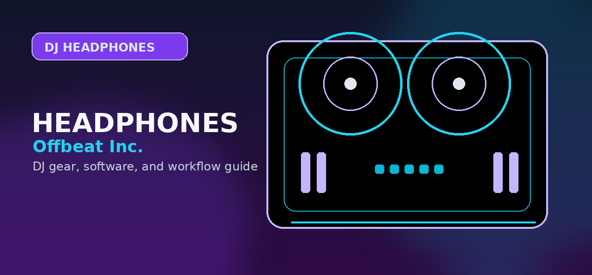

Best Professional Closed-Back DJ & Studio Headphones for 2026: Pioneer vs. Sennheiser vs. Sony
Best professional DJ headphones 2026: Pioneer HDJ-X10, Sennheiser HD 25, Sony MDR-V55 tested and ranked. Closed-back picks for real DJs by Offbeat Editorial Team.

Disclosure: This page uses affiliate links. We may earn a commission at no extra cost to you. Full disclosure →
In the high-pressure environment of a 2026 nightclub or a precision-focused recording studio, your headphones are the only bridge between your creative intent and the final output. For DJs, closed-back headphones are non-negotiable; they provide the essential passive noise isolation required to beatmatch against massive sound systems without bleed. For studio engineers, these same closed-back designs prevent "click-track leak" during vocal recordings. As we move through 2026, the industry has shifted toward a balance of extreme durability and frequency accuracy. Whether you are mixing techno in a dark booth or polishing a cinematic score in a treated room, choosing between the industry titans—Pioneer, Sennheiser, and Sony—depends on whether you prioritize low-end thump, mid-range clarity, or clinical neutrality. This guide analyzes the top professional contenders to ensure your investment matches your sonic requirements.
Pioneer: The Gold Standard for Club Performance
Pioneer continues to dominate the DJ booth with the HDJ-X10. Designed specifically for the rigors of touring, these headphones prioritize a powerful, punchy low-end that allows DJs to feel the kick drum even in the loudest environments. In 2026, the HDJ-X10 remains the top choice for electronic music producers and club DJs due to its exceptional clamping force and superior passive isolation. The build quality is industrial, featuring reinforced hinges and high-grade ear pads that resist wear. While they may be too "bass-forward" for clinical mastering, they are unmatched for live performance where energy and rhythmic precision are paramount. Expect to pay around $350, a fair price for gear that is essentially indestructible.
Confirm today’s price, stock, and return policy before buying.
Sennheiser: The Legendary Industry Workhorse
The Sennheiser HD 25 remains a marvel of engineering in 2026, defying the trend toward bulkier designs. Known for its lightweight frame and incredibly high Sound Pressure Level (SPL), the HD 25 is the go-to for those who need to hear the "meat" of the mix—the mids and highs—without sacrificing portability. Its modular design is its greatest strength; every single part, from the cable to the headband, is replaceable, ensuring these headphones last a decade. While the fit is tighter than most, the sonic transparency makes them ideal for monitoring vocals or cutting through a dense club mix. Priced at approximately $180, they offer the best value-to-performance ratio in the professional market.
Confirm today’s price, stock, and return policy before buying.
Sony: Clinical Precision for the Studio
When the goal is absolute truth in audio, the Sony MDR-7506 remains the global studio standard. Unlike the bass-heavy Pioneer or the mid-focused Sennheiser, the MDR-7506 offers a relatively flat frequency response, making them indispensable for tracking, editing, and podcasting. They excel at revealing flaws in a recording—such as subtle clicks, pops, or sibilance—that other headphones might mask. While they lack the ruggedness of the HDJ-X10 for heavy club use, their lightweight foldable design and crystal-clear transients make them the perfect "second pair" for any producer. Available for roughly $100, they provide professional-grade monitoring without a premium price tag.
Confirm today’s price, stock, and return policy before buying.
Critical Buying Factors for 2026
When selecting your headphones this year, prioritize three technical specs: Impedance, Frequency Response, and Clamping Force. For DJing, look for low impedance (typically 32-64 ohms) so they can be driven by standard mixers without an external amp. Frequency response is where you decide your "sonic flavor": a "V-shaped" curve (boosted bass and treble) is great for energy, while a "flat" curve is required for mixing. Finally, consider clamping force. A tight seal is necessary for noise isolation in a club, but if you have a larger head or wear glasses, the extreme pressure of the HD 25 or HDJ-X10 can become fatiguing during four-hour sets.
Professional Comparison Matrix
| Model | Primary Use | Sonic Profile | Durability | Est. Price | Pros | Cons |
|---|---|---|---|---|---|---|
| Pioneer HDJ-X10 | Club DJing | Bass-Heavy | Extreme | $350 | Incredible Isolation | Heavy / Expensive |
| Sennheiser HD 25 | Monitoring | Mid-Forward | High | $180 | Modular / Lightweight | Tight Fit |
| Sony MDR-7506 | Studio/Tracking | Flat/Neutral | Moderate | $100 | Transparent Audio | Weak Cable/Hinges |
Quick Verdict
- For the Club DJ: Go with the Pioneer HDJ-X10. The noise isolation and bass response are tailor-made for the booth.
- For the Touring Artist: Choose the Sennheiser HD 25. Its modularity and reliability make it the safest bet for the road.
- For the Studio Engineer: Stick with the Sony MDR-7506. Nothing beats its clinical accuracy for editing and tracking.
Investing in professional closed-back headphones is about choosing the right tool for the specific environment. Whether you need the raw power of Pioneer, the versatile reliability of Sennheiser, or the honest transparency of Sony, any of these three will elevate your technical workflow. Ready to upgrade your monitoring setup? Check out our curated affiliate links below to find the best current pricing and availability for these industry staples.
Bottom line: For professional DJ use, the Sennheiser HD-25 remains the industry benchmark -- lightweight, field-repairable, and loud enough to monitor in any club. The Pioneer HDJ-X10 is the choice if you also need studio monitoring quality. Check the Sennheiser HD-25 on Amazon →
Shop on Amazon
Compare pro DJ headphone prices on Amazon — all flagship models in stock.
Also on zZounds
Flexible financing · No credit check · 45-day price guarantee.
Buyer Checklist Before You Purchase
Before completing your purchase, run through this checklist to confirm you have considered all the relevant factors:
- Check current pricing on Amazon, Sweetwater, and the manufacturer's own site — prices vary and retailer sales can save 10-20%
- Verify compatibility with your existing software and operating system (especially important for audio interfaces and DJ controllers)
- Read the most recent Reddit r/DJs posts for the specific model to catch any reliability or firmware issues not in formal reviews
- Confirm warranty terms — Sweetwater provides a 2-year warranty on most gear at no extra cost, often worth the slight price premium
- Look for bundle deals — some retailers include cables, software licenses, or accessories that add significant value
The products recommended above have been selected based on editorial research and user feedback across multiple communities. Always read the most recent user reviews before purchasing, as product quality and support can change with manufacturing revisions.
Alternatives Worth Considering
The products on this list represent the strongest options in each category, but the market changes regularly. If none of these quite fit your needs, consider exploring:
- One tier up or down from your budget — sometimes a $50 difference puts you in a significantly better product tier
- Open-box and used options — DJ gear depreciates quickly; factory-certified refurbished units from authorised dealers offer significant savings
- Last year's model — manufacturers typically update their entry-level line annually; the previous generation is often available at a deep discount with near-identical performance
Buying advice and compatibility checks
Use this section to sanity-check the professional DJ headphones against your actual setup before comparing prices.
Best fit
Gigging DJs who need reliable isolation, durable hinges, replaceable parts, and fast one-ear monitoring.
Skip if
Bedroom-only DJs who can spend less and still learn cueing effectively.
Compatibility checks
Check replacement pads, cable availability, adapter fit, and whether the headband/earcup design works with your cueing style.
2026 update
Professional choices still favor serviceable wired designs; new wireless options remain secondary for latency-sensitive cueing.
Price caveat
A higher upfront price can be justified only if parts are replaceable and the headphones will be used frequently.
Recommendation logic
Rank durability and monitoring ergonomics first, then tonal preference.
| Buying check | What to verify | Why it matters |
|---|---|---|
| Setup fit | Inputs, outputs, operating system, software tier, and accessories | Prevents buying gear that looks right but fails in the actual rig. |
| Upgrade path | Whether the product still makes sense after six to twelve months | Reduces duplicate purchases and rushed upgrades. |
| Total cost | Required cables, cases, subscriptions, replacement parts, and backups | The lowest listing price is often not the true working setup cost. |
Official spec and support links
Check current specs, supported software, firmware, and accessory requirements at the source before buying.
How this guide fits
Use this guide for gigging and booth-ready headphones. Use the main headphones guide for the broader shortlist and the budget guides for lower-cost practice pairs.
Frequently Asked Questions
What DJ headphones do professional DJs use?
Pioneer HDJ-X10 and HDJ-X7 dominate club booth usage globally. Sennheiser HD 25 is the long-standing standard for broadcast, TV, and touring DJs. Sony MDR-7506 is ubiquitous in radio and studio settings. Technics EAH-DJ1200 is gaining traction on the professional touring circuit since 2023.
Are Pioneer HDJ headphones worth the price?
Yes, for working DJs. The HDJ-X10 ($349) is built to survive 300+ gig nights — the swivel mechanism, cable connectors, and ear pad material are engineered for daily professional use. Budget alternatives sound similar in quiet conditions but the mechanical durability gap becomes apparent quickly in touring and club environments.
What's the difference between HDJ-X5 and HDJ-X10?
The HDJ-X10 has 50mm drivers (vs 40mm in X5), higher SPL (up to 106dB vs 102dB), a more durable swivel mechanism, and a coiled cable option. The X5 is an excellent choice for DJs who need professional quality at $119 vs $349. The X10 is for professionals with 5+ gig nights per week where durability ROI justifies the premium.
Can I use studio headphones for DJing professionally?
The Sennheiser HD 25 and Sony MDR-7506 are technically studio/broadcast headphones that have been widely adopted for DJing due to their accuracy and isolation. Studio headphones generally lack the swivel ear cup design and may be uncomfortable for single-ear monitoring. For club DJing, DJ-designed headphones (Pioneer, Technics) are preferred for their physical ergonomics, not just sound.
How long do professional DJ headphones last?
The Pioneer HDJ-X10 is rated for 5,000+ hours of use with proper care. Ear pads typically need replacement every 12-18 months of heavy use. Pioneer, Sennheiser, and Technics all sell individual replacement ear pads, headbands, and cables — choose headphones with available spare parts if you're using them professionally.
Professional headphone buyer split
Professional DJ headphones should be bought for the job they must survive: loud booth cueing, long mobile-event sets, or studio-style checking. Club and mobile DJs should prioritize isolation, hinge durability, replaceable parts, and cable security. Producers who also DJ may prefer comfort and tonal balance. If the price feels high for home practice, compare DJ headphones under $100 before clicking out; if wireless convenience is the real need, check wireless DJ headphone tradeoffs.